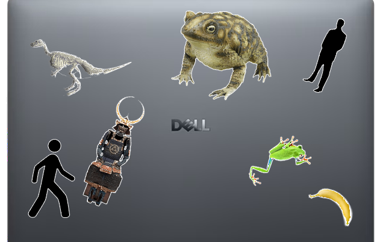
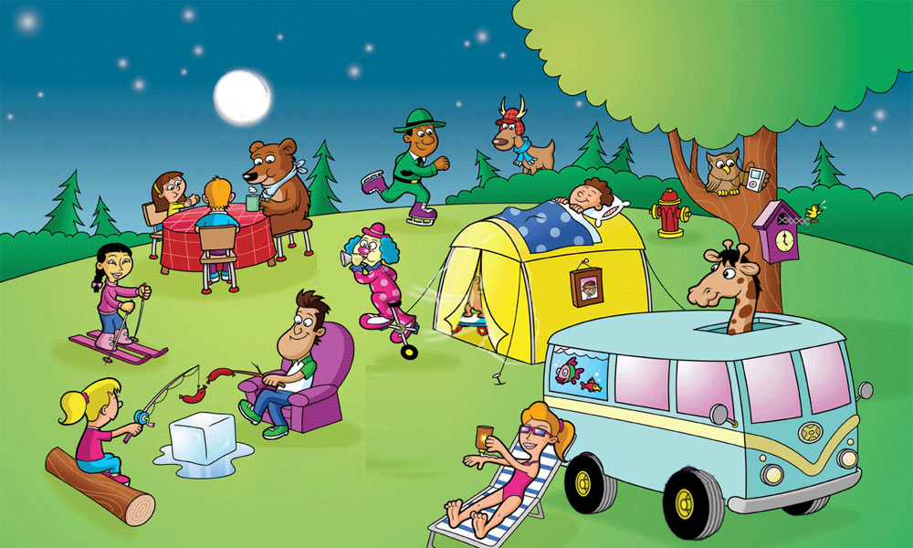
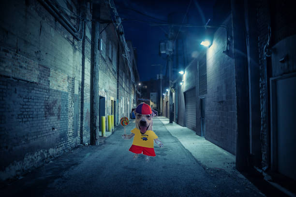
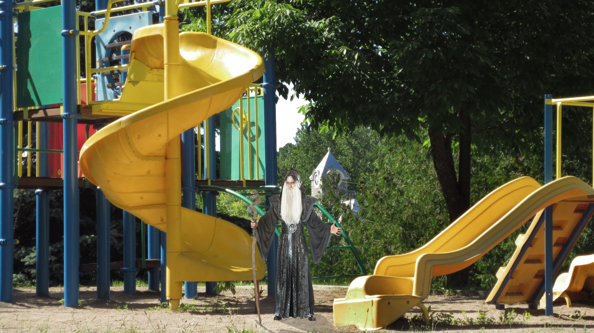

Daily Project
1st assignment:Laptop Art
This is my laptop art assignment and was the first assignment for the ps unit

2nd Assignment: Spot the diffrence
this is the second activity where we learned how to use the masking tool


3rd Assignment: Light/Dark
this is the thrid assignment where we learned clipping masks


4th Assignment: Shadows
this is the forth assignment where we learned how to do shadows

Summatives
This is the first summative we did that merged together all the skills we did for the first 3 photoshop projects